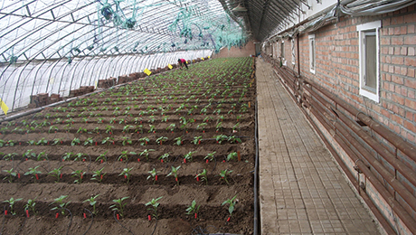

在希望的田野上｜湖北秋收开镰 各地多举措保增产增收
湖北省通过大力推广"新品种水稻，建设高标准农田"等一系列措施，为秋粮稳产提供有力支撑。
中稻占据了湖北全年粮食产量的一半以上，在湖北的主产区荆门市，370万亩中稻已经收割四成以上。
王化林说的新品种，是湖北省研发的杂交水稻"华夏香丝"，不仅产量高，还具有抗倒伏、抗病、抗高温的特性。在荆门沙洋河流的一工程示范田内，像"华夏香丝"这样优良品种水稻品种还有20多个，这些水稻新品种在荆门全面推广，确保来年增产增收。
此外，湖北还大力推进高标准农田建设，截至今年6月，已建成3980万亩高标准农田。目前，湖北全省仍有1800多万亩中稻正在有序收割中，预计10月中旬收割完毕。